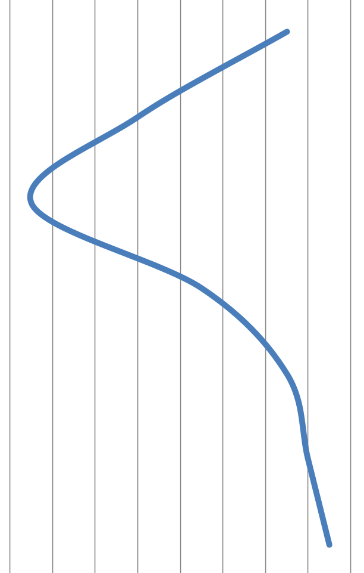

Advanced Topic: Automation
University of Toronto
29 June 2017
Goals and Motivations
- Know when and how to use Cytoscape
- Identify relevant types and sources of networks
- Command programmatic control over Cytoscape
- Integrate Cytoscape into your bioinformatics pipelines
- Publish, share and export networks online
Introductions
- Adjunct Assistant Prof, Pharmaceutical Chemistry
- Executive Director RBVI
- Cytoscape team since 2006
- Author of over a dozen Cytoscape apps
- Associate Director, Bioinformatics
- Executive Director NRNB
- Cytoscape team since 2006
- Author of half a dozen Cytoscape apps
Introductions
- Project Manager, Ideker lab
- Chief Architect for Cytoscape
- Cytoscape team since 2012
- Author of Cytoscape apps and CyREST
- Senior Software Dev, Pico lab
- Cytoscape core developer
- Cytoscape team since 2016
- Author of Cytoscape apps and CyREST tutorial
Introductions

- Clinicians
- Bench Biologists
- Bioinformaticians
- Computer Scientists
- Chemists
- Mathematicians
- Other
Automation Use Case
- Which genes correlate with a good/bad prognosis in ovarian cancer?
- How do they interact as proteins?
- What functions and pathways are they involved in?
- 192 genes with significant prognosis modeling scores
- Starting with data in R, connect to Cytoscape using CyREST
- Construct networks in Cytoscape from R
- Integrate data from R with networks
- Perform clustering and data overlays
- Export images and sessions for online sharing